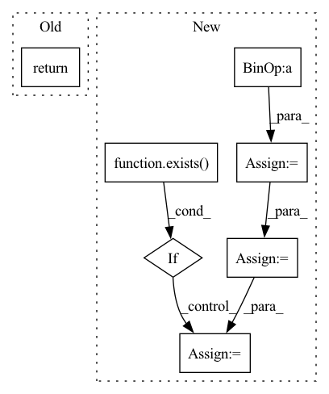

Pattern ID :4339
Before Change
super().__init__()
def forward(self, x):
return x
After Change
tokens = self.to_tokens(video)
for dpe, ff, conv in self.stages:
tokens = dpe(tokens) + tokens
tokens = ff(tokens) + tokens
if exists( conv) :
tokens = conv(tokens)
return self.to_logits(tokens)
In pattern: SUPERPATTERN
Frequency: 4
Non-data size: 7
Instances Fragment ID: 15862674
Project Name: lucidrains/uniformer-pytorch
Commit Name: 5330624e7b20753dd8f595fd8a29b63dba3ff657
Time: 2021-11-15
Author: lucidrains@gmail.com
File Name: uniformer_pytorch/uniformer_pytorch.py
M Class Name: Uniformer
N Class Name: Uniformer
M Method Name: forward(2)
N Method Name: forward(2)
M Parent Class: nn.Module
N Parent Class: nn.Module
M File Name: uniformer_pytorch/uniformer_pytorch.py
N File Name: uniformer_pytorch/uniformer_pytorch.py
M Start Line: 11
M End Line: 11
N Start Line: 76
N End Line: 85
Before Change
super().__init__()
def forward(self, x):
return x
After Change
for freq_attn, mhes_attn, attn_post_ln, ff_block, level in self.encoder_layers:
latent_seasonal = freq_attn(z)
z = z - latent_seasonal
latent_growth = mhes_attn(z)
z = z -latent_growth
z = attn_post_ln(z)
if exists( ff_block) :
z = ff_block(z)
x = level(x, latent_seasonal, latent_growth)
Fragment ID: 15862705
Project Name: lucidrains/etsformer-pytorch
Commit Name: 45c37c88fd1418716daf54cd865109160492e830
Time: 2022-03-14
Author: lucidrains@gmail.com
File Name: etsformer_pytorch/etsformer_pytorch.py
M Class Name: ETSFormer
N Class Name: ETSFormer
M Method Name: forward(2)
N Method Name: forward(2)
M Parent Class: nn.Module
N Parent Class: nn.Module
M File Name: etsformer_pytorch/etsformer_pytorch.py
N File Name: etsformer_pytorch/etsformer_pytorch.py
M Start Line: 191
M End Line: 191
N Start Line: 267
N End Line: 284
Before Change
out = rearrange(out, "(b h) n d -> b n (h d)", h = h)
out = self.to_out(out)
return out
// sparse axial causal attention
After Change
b, n, _, h, img_size, kernel_size, dilation, seq_len, device = *x.shape, self.heads, self.image_size, self.kernel_size, self.dilation, self.seq_len, x.device
if n < seq_len:
padding = seq_len - n
x = F.pad(x, (0, 0, 0, padding), value = 0)
if exists( mask) :
mask = F.pad(x, (0, padding), value = False)
qkv = self.to_qkv(x).chunk(3, dim = -1)
q, k, v = map(lambda t: rearrange(t, "b n (h d) -> (b h) n d", h = h), qkv) Fragment ID: 15862673
Project Name: lucidrains/dalle-pytorch
Commit Name: de732e8756750e161f0e51fac8baf9bcdb13182e
Time: 2021-02-10
Author: lucidrains@gmail.com
File Name: dalle_pytorch/attention.py
M Class Name: SparseConvCausalAttention
N Class Name: SparseConvCausalAttention
M Method Name: forward(3)
N Method Name: forward(3)
M Parent Class: nn.Module
N Parent Class: nn.Module
M File Name: dalle_pytorch/attention.py
N File Name: dalle_pytorch/attention.py
M Start Line: 101
M End Line: 163
N Start Line: 96
N End Line: 171
Before Change
out = rearrange(out, "(b h) n d -> b n (h d)", h = h)
out = self.to_out(out)
return out
// microsoft sparse attention CUDA kernel
After Change
b, n, _, h, img_size, axis, seq_len, device = *x.shape, self.heads, self.image_size, self.axis, self.seq_len, x.device
if n < seq_len:
padding = seq_len - n
x = F.pad(x, (0, 0, 0, padding), value = 0)
if exists( mask) :
mask = F.pad(x, (0, padding), value = False)
qkv = self.to_qkv(x).chunk(3, dim = -1)
q, k, v = map(lambda t: rearrange(t, "b n (h d) -> (b h) n d", h = h), qkv) Fragment ID: 15862708
Project Name: lucidrains/dalle-pytorch
Commit Name: de732e8756750e161f0e51fac8baf9bcdb13182e
Time: 2021-02-10
Author: lucidrains@gmail.com
File Name: dalle_pytorch/attention.py
M Class Name: SparseAxialCausalAttention
N Class Name: SparseAxialCausalAttention
M Method Name: forward(3)
N Method Name: forward(3)
M Parent Class: nn.Module
N Parent Class: nn.Module
M File Name: dalle_pytorch/attention.py
N File Name: dalle_pytorch/attention.py
M Start Line: 192
M End Line: 248
N Start Line: 195
N End Line: 266